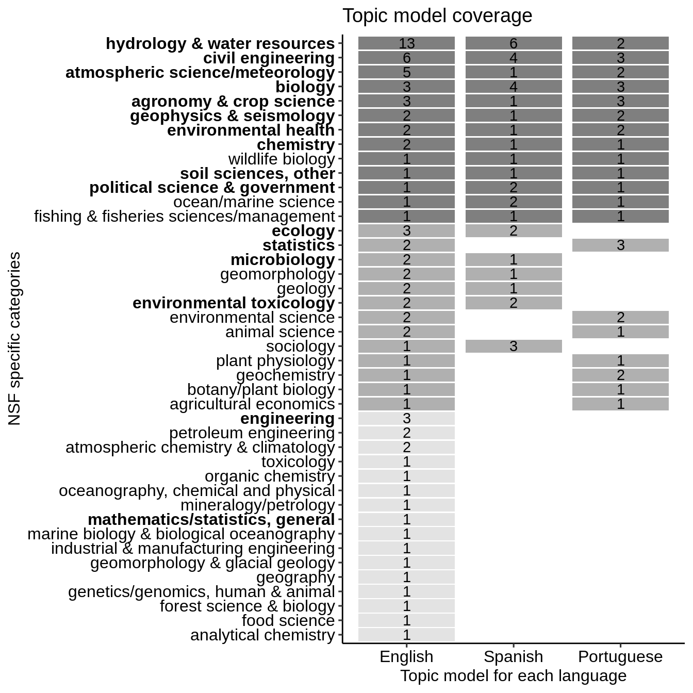

LDA_comparison.RmdIn this vignette, we compare the topics outputted by topic modelling on three different corpora in English, Spanish and Porturguese.
We access the topic lists stored in extdata using system.file().
library(dplyr) library(reshape2) en <- read.csv(system.file( "extdata", "topic_names_en.csv", package = "wateReview") ) %>% mutate(lang = "en") %>% melt(id.vars = c("topic_id","lang")) es <- read.csv(system.file( "extdata", "topic_names_es.csv", package = "wateReview") ) %>% mutate(lang = "es") %>% melt(id.vars = c("topic_id","lang")) pt <- read.csv(system.file( "extdata", "topic_names_pt.csv", package = "wateReview"), na.strings=c("","NA") ) %>% mutate(lang = "pt") %>% melt(id.vars = c("topic_id","lang"))
Each of these language data.frame holds the topic_id outputted by the topic model and a language identifier lang. variable holds the category of topics: general, specific, water budget, methods and theme and value the corresponding topic name.
head(en %>% filter(variable == "NSF_specific")) #> topic_id lang variable value #> 1 66 en NSF_specific agricultural economics #> 2 17 en NSF_specific agronomy & crop science #> 3 34 en NSF_specific agronomy & crop science #> 4 46 en NSF_specific agronomy & crop science #> 5 55 en NSF_specific analytical chemistry #> 6 4 en NSF_specific animal science
We know bind the three language data.frames, filter for the specific topics and count their occurence across themes per topic and language.
lda_comparison <- rbind(en, es, pt) %>% na.omit() %>% filter(variable == "NSF_specific") %>% group_by(value, lang) %>% tally() head(lda_comparison) #> # A tibble: 6 x 3 #> # Groups: value [3] #> value lang n #> <chr> <chr> <int> #> 1 agricultural economics en 1 #> 2 agricultural economics pt 1 #> 3 agricultural engineering es 1 #> 4 agricultural engineering pt 2 #> 5 agronomy & crop science en 3 #> 6 agronomy & crop science es 1
To compare Spanish and Portuguese results with the English ones, we need to re-order the data.frame based on the tally of the English results and the overall number of covered topics.
lda_comparison$nlang <- lda_comparison %>% group_by(value) %>% group_map(~ rep(length(table(.x$lang)), length(table(.x$lang)))) %>% unlist() lvls <- as.character(lda_comparison$value[lda_comparison$lang=="en"])[order(lda_comparison$n[lda_comparison$lang=="en"])] lda_comparison$value <- factor(lda_comparison$value, levels = lvls) lda_comparison <- na.omit(lda_comparison) # missing 1 spanish? lda_comparison$lang <- factor(lda_comparison$lang, labels = c("English", "Spanish", "Portuguese"))
We now load some visualization libraries and presents the comparison as a heatmap where the number corresponds to the number of raw LDA topics and the color to the coverage between the three languages.
library(ggplot2) library(forcats) library(ggpubr) ggplot(data = lda_comparison, aes(x = lang, y = fct_reorder(value, nlang))) + geom_tile(aes(fill = nlang, width=0.9, height=0.9)) + geom_text(aes(label = n)) + scale_fill_gradient(low = "grey89", high = "grey50") + labs(title= "Topic model coverage", y="NSF specific categories", x = "Topic model for each language") + theme_pubr() + theme(axis.text.y = element_text(face = c('plain','plain','plain', 'plain', 'plain', 'plain', 'plain', 'plain', 'bold', 'plain', 'plain', 'plain', 'plain', 'plain', 'plain', 'bold', 'plain', 'plain', 'plain', 'plain', 'plain', 'plain', 'plain', 'bold', 'plain', 'plain', 'bold', 'bold', 'bold', 'plain', 'plain', 'bold', 'bold', 'plain', 'bold','bold', 'bold', # 6-10 'bold', 'bold', 'bold','bold','bold' # 1-5 ))) + rremove("legend")
